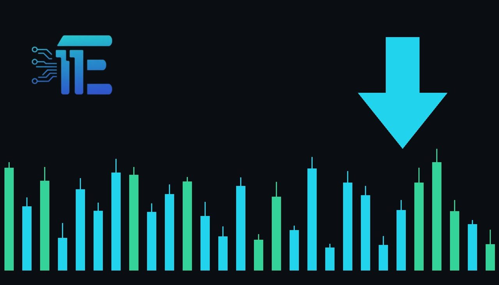

US Dollar Edges Up Against Loonie As Bond Yields RiseLoonie ខណៈអត្រាការប្រាក់ប័ណ្ណបំណុលកើនឡើង
XAU/USD impact: ▼ Bearishផលប៉ះពាល់លើ XAU/USD: ▼ ធ្លាក់

ប្រាក់ដុល្លារអាមេរិកបានកើនឡើងធៀបនឹងប្រាក់កាណាដា ខណៈដែលអត្រាការប្រាក់ប័ណ្ណបំណុលបានងើបឡើងបន្តិច និងតម្លៃប្រេងបានធ្លាក់ចុះ។ ចលនាទីផ្សារប្តូរប្រាក់នេះមានឥទ្ធិពលដោយផ្ទាល់ទៅលើការកំណត់តម្លៃ និងសន្ទុះជុំវិញ XAU/USD។
ប្រាក់ដុល្លារអាមេរិកបានកើនឡើងធៀបនឹងប្រាក់កាណាដា ខណៈដែលអត្រាការប្រាក់ប័ណ្ណបំណុលបានងើបឡើងបន្តិច និងតម្លៃប្រេងបានធ្លាក់ចុះ។ ចលនាទីផ្សារប្តូរប្រាក់នេះមានឥទ្ធិពលដោយផ្ទាល់ទៅលើការកំណត់តម្លៃ និងសន្ទុះជុំវិញ XAU/USD។
The US dollar posted gains against the Canadian dollar for the second consecutive session, supported by a modest increase in bond yields alongside falling oil prices. Foreign exchange movements reflect shifting capital flows and ongoing adjustments in North American markets.
ប្រាក់ដុល្លារអាមេរិកបានកត់ត្រាការកើនឡើងធៀបនឹងប្រាក់ដុល្លារកាណាដាសម្រាប់រយៈពេលពីរថ្ងៃជាប់គ្នា និងការធ្លាក់ចុះនៃតម្លៃប្រេង។ និងការកែសម្រួលជាបន្តបន្ទាប់នៅក្នុងទីផ្សារអាមេរិកខាងជើង។
For XAU/USD traders, fluctuations in the US dollar and Treasury yields serve as a primary transmission channel. A firmer greenback typically weighs on dollar-denominated bullion, while shifting yields alter the opportunity cost of holding non-yielding assets.
សម្រាប់អ្នកជួញដូរ XAU/USD ការប្រែប្រួលនៃប្រាក់ដុល្លារអាមេរិក និងអត្រាការប្រាក់ប័ណ្ណបំណុលគឺជាបណ្តាញបញ្ជូនដ៏សំខាន់។ ការឡើងថ្លៃនៃប្រាក់ដុល្លារជាទូទៅដាក់សម្ពាធលើលោហៈមានតម្លៃដែលកំណត់តម្លៃជាប្រាក់ដុល្លារ ខណៈពេលដែលការប្រែប្រួលអត្រាការប្រាក់ផ្លាស់ប្តូរការចំណាយឱកាសនៃការកាន់កាប់ទ្រព្យសកម្មដែលគ្មានអត្រាការប្រាក់។
Market participants generally view a rising dollar and higher yields as factors that pressure prices downwards. Conversely, a reversal in currency strength or declining yields would tend to provide renewed support for safe-haven bullion.
អ្នកចូលរួមទីផ្សារជាទូទៅមើលឃើញថាការឡើងថ្លៃនៃប្រាក់ដុល្លារ និងអត្រាការប្រាក់ខ្ពស់គឺជាកត្តាដែលដាក់សម្ពាធលើតម្លៃឱ្យធ្លាក់ចុះ។ ផ្ទុយទៅវិញ ការធ្លាក់ចុះនៃតម្លៃប្រាក់ដុល្លារ ឬការថយចុះនៃអត្រាការប្រាក់នឹងជួយផ្តល់ការគាំទ្រថ្មីដល់តម្លៃមាសដែលជាទ្រព្យសកម្មសុវត្ថិភាព។
Traders monitoring the broader macroeconomic landscape should keep a close eye on upcoming debt market movements, currency pairs involving the greenback, and broader commodity price trends.
អ្នកជួញដូរដែលតាមដានសេដ្ឋកិច្ចម៉ាក្រូគួរតែយកចិត្តទុកដាក់យ៉ាងខ្លាំងចំពោះចលនាទីផ្សារបំណុលនាពេលខាងមុខ គូប្រាក់ដែលពាក់ព័ន្ធនឹងប្រាក់ដុល្លារ និងនិន្នាការតម្លៃទំនិញទូទៅ។
Key takeawaysចំណុចសំខាន់ៗ
- The US dollar strengthened against the Canadian counterpart for two consecutive sessions.
- ប្រាក់ដុល្លារអាមេរិកបានឡើងថ្លៃធៀបនឹងប្រាក់កាណាដាសម្រាប់រយៈពេលពីរថ្ងៃជាប់គ្នា។
- Bond yields nudged higher while oil prices dropped, influencing broader market dynamics.
- អត្រាការប្រាក់ប័ណ្ណបំណុលបានងើបឡើងបន្តិច ខណៈតម្លៃប្រេងបានធ្លាក់ចុះ ដែលប៉ះពាល់ដល់ទីផ្សារទូទៅ។
- Currency and yield shifts serve as key transmission channels affecting dollar-priced assets.
- ការប្រែប្រួលប្រាក់ប្តូរប្រាក់ និងអត្រាការប្រាក់គឺជាបណ្តាញសំខាន់ដែលប៉ះពាល់ដល់ទ្រព្យសកម្មកំណត់តម្លៃជាប្រាក់ដុល្លារ។
Original commentary by THE MARKET CODE, based on public reporting from Yahoo! Finance: GC=F News. Written with the help of AI. Educational only, not financial advice.
មតិវិភាគដើមដោយ THE MARKET CODE ផ្អែកលើការរាយការណ៍សាធារណៈពី Yahoo! Finance: GC=F News។ សរសេរដោយមានជំនួយពី AI។ មាតិកាអប់រំប៉ុណ្ណោះ មិនមែនជាដំបូន្មានហិរញ្ញវត្ថុទេ។